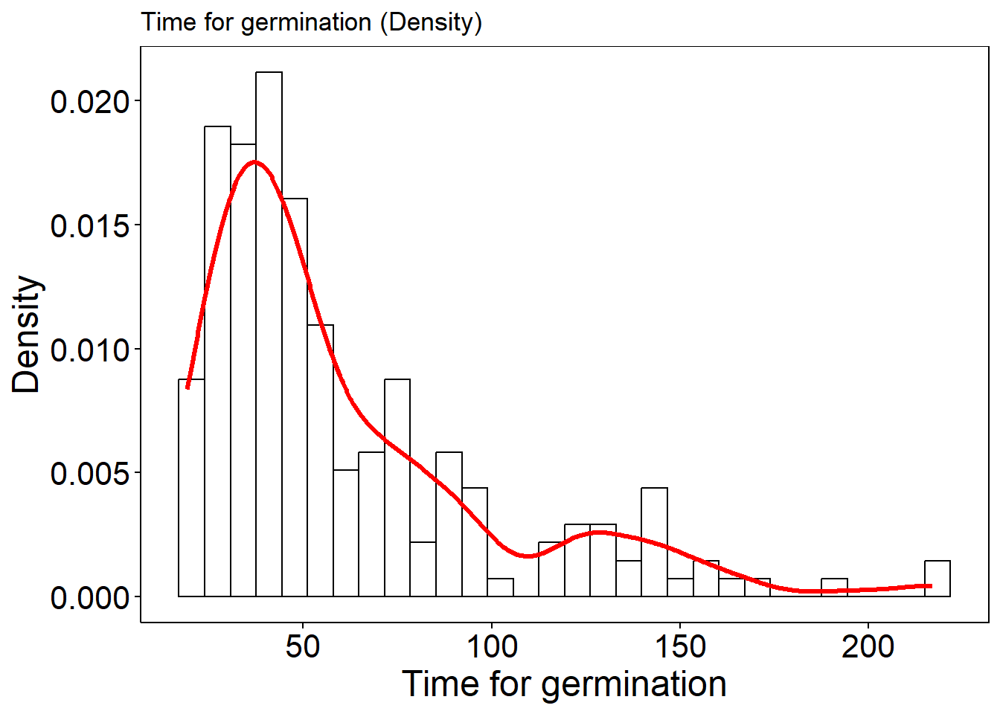
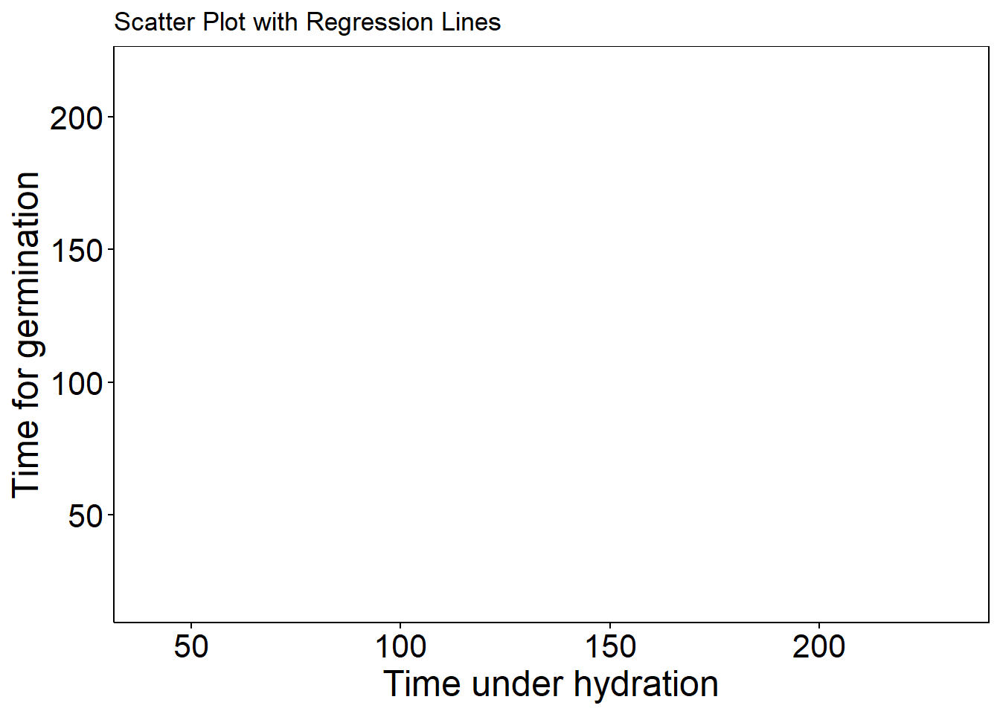
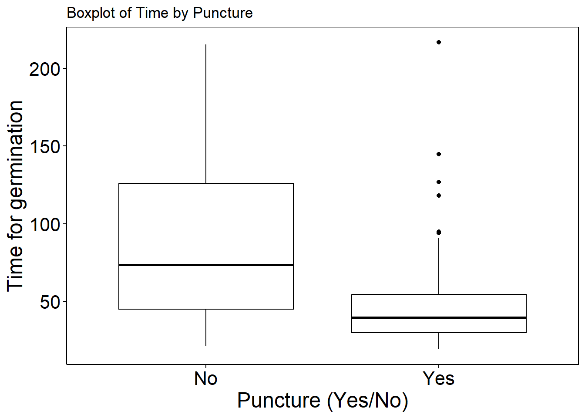

| id | puncture | temperature | weight | weight_after_hydration | time_under_hydration | phase | radicle | time |
|---|---|---|---|---|---|---|---|---|
| 475 | Yes | 34 | 0.425 | 1.342 | 42 | Germinated | 10.6 | 19.10 |
| 437 | Yes | 34 | 0.483 | 1.484 | 41 | Germinated | 9.9 | 19.54 |
| 390 | Yes | 31 | 0.481 | 1.319 | 41 | Germinated | 8.7 | 20.43 |
| 465 | Yes | 34 | 0.466 | 1.434 | 42 | Germinated | 9.2 | 20.93 |
| 317 | Yes | 28 | 0.384 | 1.536 | 41 | Germinated | 6.9 | 20.93 |
| 401 | No | 31 | 0.529 | 1.606 | 41 | Germinated | 8.2 | 21.37 |
Projeto - Rascunho
Modelagem com Apoio Computacional
The dataset
Castor seed germination dataset shared by Doctor Liv Soares Severino from Embrapa Algodão.
Link: Castor seed hydration and germination influenced by temperature and puncture
Exploratory Data Analysis (EDA)
#interesse na variável time
ggplot(castor, aes(x = time)) +
geom_histogram(bins = 30, fill = "white", color="black") +
labs(title = "Time for germination (Frequency)", x = "Time for germination", y = "Frequency") +
theme_article()
#save as png
ggsave("C:/Users/User/Documents/GitHub/MSc-est/MODELAGEM COM APOIO COMPUTACIONAL/article/img/histogram_frequency.png", width = 8, height = 6)
# com a densidade
ggplot(castor, aes(x = time)) +
geom_histogram(aes(y = after_stat(density)), bins = 30, fill = "white", color="black") +
geom_density(color = "red", linewidth = 1.2) +
labs(title = "Time for germination (Density)", x = "Time for germination", y = "Density") +
theme_article()
ggsave("C:/Users/User/Documents/GitHub/MSc-est/MODELAGEM COM APOIO COMPUTACIONAL/article/img/histogram_density.png", width = 8, height = 6)ggplot(castor, aes(x = time_under_hydration, y = time)) +
geom_point(color="black") +
labs(
title = "Scatter Plot with Regression Lines",
x = "Time under hydration", y = "Time for germination", color = "Puncture") +
theme_article()
ggsave("C:/Users/User/Documents/GitHub/MSc-est/MODELAGEM COM APOIO COMPUTACIONAL/article/img/tuh.png", width = 8, height = 6)ggplot(castor, aes(x = as.factor(temperature), y = time)) +
geom_boxplot(fill = "white", color = "black") +
labs(title = "Boxplot of Time by Temperature",
x = "Temperature (°C)", y = "Time for germination") +
theme_article()
ggsave("C:/Users/User/Documents/GitHub/MSc-est/MODELAGEM COM APOIO COMPUTACIONAL/article/img/boxplot_temperature.png", width = 8, height = 6)
ggplot(castor, aes(x = as.factor(puncture), y = time)) +
geom_boxplot(fill = "white", color = "black") +
labs(title = "Boxplot of Time by Puncture",
x = "Puncture (Yes/No)", y = "Time for germination") +
theme_article()
ggsave("C:/Users/User/Documents/GitHub/MSc-est/MODELAGEM COM APOIO COMPUTACIONAL/article/img/boxplot_puncture.png", width = 8, height = 6)Fitting a Linear Regression Model based on the Mean
Method 1
Method 2
#########################################################
## Regression by Rieck and Nedelman (1991)
## Rieck, J.R., Nedelman, J.R., 1991. A log-linear model for the
## Birnbaum–Saunders distribution. Technometrics 33, 51–60.
#########################################################
mle_unc <- function(x, t, v, kernel = "normal") {
x <- as.matrix(x)
t <- as.matrix(t)
y <- as.matrix(log(t))
fit <- lm.fit(x, y)
beta <- c(fit$coef)
k <- length(beta)
n <- length(y)
mu <- x %*% beta
alpha <- sqrt((4 / n) * sum((sinh((y - mu) / 2)) ^ 2))
thetaStar <- c(beta, alpha)
loglik <- function(par) {
z1 <- par[1:k]
z2 <- par[k + 1]
mu <- (x %*% z1)
xi1 <- (2 / z2) * cosh((y - mu) / 2)
xi2 <- (2 / z2) * sinh((y - mu) / 2)
g <- switch(kernel,
"normal" = exp(-(xi2 ^ 2) / 2),
"t" = (v + (xi2 ^ 2)) ^ (-(v + 1) / 2)
)
const <- switch(kernel,
"normal" = 1 / (sqrt(2 * pi)),
"t" = (gamma((v + 1) / 2) * v ^ (v / 2)) /
(sqrt(pi) * gamma(v / 2))
)
result <- switch(kernel,
"normal" = sum(log(const / 2) + log(xi1) + log(g)),
"t" = sum(log(const / 2) + log(xi1) + log(g))
)
return(-result)
}
loglikplus <- function(par) {
z1 <- par[1:k]
z2 <- par[k + 1]
mu <- (x %*% z1)
xi1 <- (2 / z2) * cosh((y - mu) / 2)
xi2 <- (2 / z2) * sinh((y - mu) / 2)
result <- log(dnorm(xi2)) + log(xi1 / 2)
return(sum(result))
}
score <- function(par) {
z1 <- par[1:k]
z2 <- par[k + 1]
mu <- (x %*% z1)
xi1 <- (2 / z2) * cosh((y - mu) / 2)
xi2 <- (2 / z2) * sinh((y - mu) / 2)
status <- 1
const <- switch(kernel,
"normal" = 1 / (sqrt(2 * pi)),
"t" = (gamma((v + 1.0) / 2) * v ^ (v / 2)) /
(sqrt(pi) * gamma(v / 2))
)
derivativeF <- switch(kernel,
"normal" = -(const) * xi2 * exp(-(xi2 ^ 2) / 2),
"t" = -(const) * (v + 1) * xi2 * ((v + (xi2 ^ 2)) ^
(-(v + 3) / 2))
)
h <- switch(kernel,
"normal" = dnorm(xi2) / (1 - pnorm(xi2)),
"t" = dt(xi2, df = v) / (1 - pt(xi2, df = v))
)
wg <- switch(kernel,
"normal" = -(1 / 2),
"t" = -(v + 1) / (2 * (v + (xi2 ^ 2)))
)
Ubeta <- switch(kernel,
"normal" = -status * ((2 / (z2 ^ 2)) * sinh(y - mu) * wg +
(1 / 2) * tanh((y - mu) / 2)) +
((1 - status) / 2) * xi1 * h,
"t" = -status * ((2 / (z2 ^ 2)) * sinh(y - mu) * wg +
(1 / 2) * tanh((y - mu) / 2)) +
((1 - status) / 2) * xi1 * h
)
Ualpha <- switch(kernel,
"normal" = -sum((status / z2) *
(((xi2 ^ 2) * 2 * wg) + 1) -
((1 - status) / z2) * h * xi2),
"t" = -sum((status / z2) * (((xi2 ^ 2) * 2 * wg) + 1) -
((1 - status) / z2) * h * xi2)
)
result <- c(t(x) %*% Ubeta, Ualpha)
return(result)
}
# est <- optim(thetaStar, loglik, method = "BFGS", hessian = TRUE)
est <- optim(thetaStar, loglik, method = "BFGS", hessian = TRUE)
# control = list(fnscale = -1, maxit = 2000, reltol = 1e-12))
if (est$conv != 0)
warning("FUNCTION DID NOT CONVERGE!")
coef <- (est$par)[1:k]
alphaest <- est$par[k + 1]
muhat <- x %*% coef
muhat <- as.vector(muhat)
etahat <- exp(muhat)
SHess = solve(est$hessian)
SE = sqrt(diag(SHess))
se.coef = SE
tval = c(coef, alphaest) / se.coef
matcoef = cbind(c(coef, alphaest), se.coef, tval, 2 * (1 - pnorm(abs(tval))))
AIC <- 2 * loglik(c(coef, alphaest)) + 2 * (length(coef) + 1)
BIC = 2 * loglik(c(coef, alphaest)) + (length(coef) + 1) * log(length(y))
result <- list(
alphaHat = alphaest,
betaHat = coef,
muHat = muhat,
AIC = AIC,
BIC = BIC,
matcoef = matcoef
)
return(result)
}
summary.mle_unc <- function(model) {
cat("Call: mle_unc\n\n")
coefs <- cbind(
Estimate = model$matcoef[, 1],
"Std. Error" = model$matcoef[, 2],
"t value" = model$matcoef[, 3],
"Pr(>|t|)" = model$matcoef[, 4]
)
rownames(coefs) <- c(paste0("beta", 0:(nrow(coefs)-2)), "alpha")
printCoefmat(coefs)
cat("\nAIC:", round(model$AIC, 2),
" BIC:", round(model$BIC, 2), "\n")
}mean_model <- mle_unc(
x = model.matrix(~ temperature + puncture + time_under_hydration, data = castor),
t = castor$time,
v = 4,
kernel = "t")Warning in log(xi1): NaNs produced
Warning in log(xi1): NaNs produced
Warning in log(xi1): NaNs produced
Warning in log(xi1): NaNs produced
Warning in log(xi1): NaNs produced
Warning in log(xi1): NaNs produced
Warning in log(xi1): NaNs produced
Warning in log(xi1): NaNs produced
Warning in log(xi1): NaNs produced
Warning in log(xi1): NaNs produced
Warning in log(xi1): NaNs produced
Warning in log(xi1): NaNs produced
Warning in log(xi1): NaNs produced
Warning in log(xi1): NaNs produced
Warning in log(xi1): NaNs produced
Warning in log(xi1): NaNs produced
Warning in log(xi1): NaNs produced
Warning in log(xi1): NaNs produced
Warning in log(xi1): NaNs producedsummary.mle_unc(mean_model)Call: mle_unc
Estimate Std. Error t value Pr(>|t|)
beta0 3.24190389 0.11328242 28.6179 < 2e-16 ***
beta1 -0.00981254 0.00329132 -2.9813 0.00287 **
beta2 0.01495290 0.03190901 0.4686 0.63935
beta3 0.01345810 0.00047384 28.4024 < 2e-16 ***
alpha 0.15477931 0.01014888 15.2509 < 2e-16 ***
---
Signif. codes: 0 '***' 0.001 '**' 0.01 '*' 0.05 '.' 0.1 ' ' 1
AIC: -76.61 BIC: -60.09 Fitting a Linear Regression Model based on the Mode
# revised/adapted from the mean proposal by Rieck, J.R., Nedelman, J.R.
# author: T. Nonato
mle_moda_bs <- function(x, t) {
x <- as.matrix(x)
t <- as.matrix(t)
fit <- lm.fit(x, log(t))
beta <- c(fit$coef)
k <- length(beta)
n <- length(t)
mu_init <- x %*% beta
alpha <- sqrt((4/n)*sum((sinh((log(t) - mu_init)/2))^2))
phi_init <- alpha^2 #chute inicial
thetaStar <- c(beta, phi_init)
loglik_moda <- function(par) {
log_moda_Y <- x %*% par[1:k]
phi_param <- par[k+1]
if (phi_param <= 0 || phi_param >= 1) {
return(NA)}
alpha_art <- sqrt(phi_param) #proposta do artigo
beta_art <- exp(log_moda_Y) / (1 - phi_param) #proposta do artigo
#pdf da distribuição log-BS
z <- (sqrt(t/beta_art) - sqrt(beta_art/t))/alpha_art
pdf_bs <- (1/(alpha_art*sqrt(t)))*(sqrt(t/beta_art) +
sqrt(beta_art/t))*dnorm(z)
pdf_bs[pdf_bs <= 0] <- .Machine$double.xmin
#substitui valor menor ou igual a 0 por um número muito pequeno
#log-verossimilhança
l_i <- log(pdf_bs)
if (any(!is.finite(l_i))) {
return(.Machine$double.xmax)}
#retorna um valor muito grande se algum log for infinito
#verossimilhança total (loglik-plus)
return(-sum(l_i))}
est <- optim(
par = thetaStar,
fn = loglik_moda,
method = "BFGS",
hessian = TRUE,
control = list(maxit = 2000, reltol = 1e-12))
if (est$conv != 0) {
warning("FUNCTION DID NOT CONVERGE!")}
coef <- (est$par)[1:k]
phi_est <- est$par[k + 1]
moda_hat_log <- x %*% coef
moda_hat <- exp(moda_hat_log)
SHess = solve(est$hessian)
SE = sqrt(diag(SHess))
tval = est$par / SE
matcoef = cbind(est$par, SE, tval, 2 * (1 - pnorm(abs(tval))))
AIC <- 2 * est$value + 2 * (k + 1)
BIC <- 2 * est$value + (k + 1) * log(n)
result <- list(
phiHat = phi_est,
betaHat_log_moda = coef,
modaHat = moda_hat,
AIC = AIC,
BIC = BIC,
matcoef = matcoef)
return(result)}
summary.mle_moda_bs <- function(model) {
cat("Call: mle_moda_bs\n\n")
coefs <- cbind(
Estimate = model$matcoef[, 1],
"Std. Error" = model$matcoef[, 2],
"t value" = model$matcoef[, 3],
"Pr(>|t|)" = model$matcoef[, 4]
)
rownames(coefs) <- c(paste0("beta", 0:(nrow(coefs)-2)), "phi")
printCoefmat(coefs)
cat("\nAIC:", round(model$AIC, 2),
" BIC:", round(model$BIC, 2), "\n")
}mode_linear_model <- mle_moda_bs(
x = model.matrix(~ temperature + puncture + time_under_hydration, data = castor),
t = castor$time)
summary.mle_moda_bs(mode_linear_model)Call: mle_moda_bs
Estimate Std. Error t value Pr(>|t|)
beta0 3.36533366 0.11875230 28.3391 < 2.2e-16 ***
beta1 -0.01369698 0.00342652 -3.9973 6.406e-05 ***
beta2 -0.02967216 0.03415971 -0.8686 0.385
beta3 0.01286446 0.00039388 32.6607 < 2.2e-16 ***
phi 0.03769567 0.00375400 10.0415 < 2.2e-16 ***
---
Signif. codes: 0 '***' 0.001 '**' 0.01 '*' 0.05 '.' 0.1 ' ' 1
AIC: 432.85 BIC: 449.37 Fitting a Linear Regression Model based on the Quantiles
#revised function by T. Nonato
#authors: L. Sanchez, V. Leiva
#source: https://doi.org/10.1002/asmb.2556
bsreg.fit<-function(x, y, link = "log") {
n<-NROW(x)
p<-NCOL(x)
linkobj<-make.link(link)
linkfun<-linkobj$linkfun
linkinv<-linkobj$linkinv
Q.eta<-linkobj$mu.eta
ystar<-linkfun(y)
beta<-ginv(t(x) %*% x) %*% t(x) %*% ystar
xbar<-mean(y)
vart<-(n/(n-1))*var(y)
r<-vart / xbar^2
alphai<-sqrt((2*r-2+2*sqrt(1+3*r))/(5-r))
if (is.nan(alphai) || is.na(alphai)) { #MUDANÇA
s1<-mean(y)
r1<-1/mean(1/y)
alphai<-sqrt(2*sqrt(s1/r1)-2)
}
start<-c(as.vector(beta), alphai) #MUDANÇA
# função de verossimilhança (log-like)
fr<-function(vp) {
betab<-vp[1:p]
eta<-as.vector(x %*% betab)
Q<-linkinv(eta)
alphab<-vp[p+1] #MUDANÇA: índice corrigido, garantir escalar
q<-0.5
zq<-qnorm(q, mean = 0, sd = 1)
gma_alphab<-alphab * zq + sqrt(alphab^2 * zq^2 + 4)
vt<-y
sum(-0.5*log(8*pi*vt) - log(alphab) - log(gma_alphab) - 0.5*log(Q) +
log(gma_alphab^2/2 + 2*Q/vt) -
(2*Q/(alphab^2*gma_alphab^2*vt))*(vt*gma_alphab^2/(4*Q) - 1)^2)
}
# função gradiente: retorna um vetor NUMÉRICO de comprimento p+1
grr<-function(vp) {
betab<-vp[1:p]
eta<-as.vector(x %*% betab)
Q<-linkinv(eta)
alphab<-vp[p+1] # MUDANÇA: garantir escalar
q<-0.5
zq<-qnorm(q)
gma_alphab<-alphab * zq + sqrt(alphab^2 * zq^2 + 4)
# derivadas auxiliares
gma_alphabp<-zq + zq^2 * alphab * (1 / sqrt(alphab^2 * zq^2 + 4))
vt<-y
z<--0.5*(1/Q) - 2*(1/(alphab^2 * gma_alphab^2 * vt)) +
gma_alphab^2 * vt * (1/(8 * alphab^2 * Q^2)) +
4*(1/(vt * gma_alphab^2 + 4*Q))
b<--(gma_alphab + alphab * gma_alphabp) * (1/(alphab * gma_alphab)) +
2*vt * gma_alphab * gma_alphabp * (1/(vt * gma_alphab^2 + 4*Q)) -
(gma_alphab * gma_alphabp * alphab - gma_alphab^2) * vt * (1/(4*Q*alphab^3)) -
2*(1/(alphab^3)) +
4*Q*(gma_alphab + alphab * gma_alphabp) * (1/(alphab^3 * gma_alphab^3 * vt))
# MUDANÇA
# gradiente em relação a beta (p x 1)
grad_beta<-as.vector(t(x) %*% (Q.eta(eta) * z))
# gradiente em relação a alpha (escala)
grad_alpha<-sum(b)
# retornar UM VETOR numérico (p+1)
c(grad_beta, grad_alpha)
}
A<-matrix(c(rep(0,p),1),1,p+1)
B<-0
opt<-maxLik::maxBFGS(fn = fr, grad = grr, start = start,
constraints = list(ineqA = A, ineqB = B))
# MUDANÇA: inspeção para debug
if (!is.null(opt$code) && opt$code > 0) warning("optimization failed to converge (opt$code > 0)")
if (!is.null(opt$convergence) && opt$convergence != 0) warning("optimizer signaled non-zero convergence code")
estimates<-opt$estimate
# MUDANÇA: garantir que log.lik.est é numérico (NA se não disponível)
log.lik.est<-if (!is.null(opt$maximum)) opt$maximum else NA
beta<-as.vector(estimates[1:p])
eta<-as.vector(x %*% beta)
Q<-linkinv(eta)
alpha<-estimates[p+1]
q<-0.5
zq<-qnorm(q, mean = 0, sd = 1)
aux<-matrix(1, ncol = 1L, nrow = n)
gma_alpha<-alpha * zq + sqrt(alpha^2 * zq^2+4)
gma_alphap<-zq+alpha*zq^2*(1/sqrt(alpha^2*zq^2+4))
gma_alphapp<-4*zq^2*(1/sqrt(alpha^2*zq^2+4)^3)
par_alpha<-alpha
par_beta <-4*Q/gma_alpha^2
Acal<-((2*gma_alphap+alpha*gma_alphapp)*(alpha*gma_alpha)-(gma_alpha+alpha*gma_alphap)^2)/
(alpha^2*gma_alpha^2)
Bcal<-8*Q*(gma_alphap^2+gma_alpha*gma_alphapp)
Ccal<-(1/(4*Q*alpha^4))*(alpha^2*gma_alphap^2+alpha^2*gma_alpha*gma_alphapp-alpha*gma_alpha*gma_alphap-
3*gma_alpha*gma_alphap*alpha+3*gma_alpha^3)
Dcal<-4*Q*((2*gma_alphap+alpha*gma_alphapp)*alpha*gma_alpha-3*(gma_alpha+alpha*gma_alphap)^2)/
(alpha^4*gma_alpha^4)
if(link == "log"){
a<-Q
h1<-Q^2
h2<--1/(Q^2*(log(Q)^3))}
if(link == "identity"){
a<-rep(1,n)
h1<-1
h2<-0}
if(link == "sqrt"){
a<-2*sqrt(Q)
h1<-4*Q
h2<--1/(4*Q^3)}
integ.f2<-c()
integ.f3<-c()
integ.f4<-c()
integ.f5<-c()
f2<-function(u,j){
return((u/(u*gma_alpha^2+4*Q[j]))^2*dbisa(u, par_beta[j], par_alpha))}
f3<-function(u,j){
return((u/(u*gma_alpha^2+4*Q[j])^2)*dbisa(u, par_beta[j], par_alpha))}
f4<-function(u,j){
return((1/(u*gma_alpha^2+4*Q[j])^2)*dbisa(u, par_beta[j], par_alpha))}
f5<-function(u,j){
return((1/(u*gma_alpha^2+4*Q[j]))*dbisa(u, par_beta[j], par_alpha))}
# MUDANÇA: tenta integrar; se der erro, retorna NA ou 0
safe_integrate <- function(fun, j, lower = 1e-6, upper = 1000) {
val <- tryCatch(
integrate(fun, lower = lower, upper = upper, j = j)$value,
error = function(e) NA_real_)
if (is.na(val) || is.infinite(val)) val <- 0
return(val)}
for (i in seq_len(n)) {
integ.f2[i] <- safe_integrate(f2, i)
integ.f3[i] <- safe_integrate(f3, i)
integ.f4[i] <- safe_integrate(f4, i)
integ.f5[i] <- safe_integrate(f5, i)
}
AIC <- (-2 * log.lik.est + 2 * (p+1))
AICc<- AIC + (2 * (p+1) * ((p+1) + 1)) / (n - (p+1) - 1)
BIC <- (-2 * log.lik.est + log(n) * (p+1))
v<-(-1/(2*Q^2)+16*integ.f4 + (1/(alpha^2*Q^2))*(1+alpha^2/2))*h1-
(1/(2*Q)+(1/(2*alpha^2*Q))*(1+alpha^2/2)-4*integ.f5)*h2
s<-8*gma_alpha*gma_alphap*integ.f3 -
((gma_alpha * gma_alphap * alpha- gma_alpha^2)/(alpha^3*gma_alpha^2*Q^2))*(1+alpha^2/2)-
((gma_alpha +alpha* gma_alphap)/(alpha^3*gma_alpha *Q))*(1+alpha^2/2)
u<-Acal-Bcal*integ.f3 -2*(gma_alpha^3*gma_alphapp-gma_alpha^2*gma_alphap^2)^2*
integ.f2 + Ccal*(4*Q/gma_alpha^2)*(1+alpha^2/2)-6/alpha^4-
Dcal*(gma_alpha^2/(4*Q))*(1+alpha^2/2)
kbb<-t(x)%*%diag(as.vector(v))%*%x
kaa<-sum(diag(as.vector(u)))
kba<-t(x)%*%diag(as.vector(a))%*%s
Diag<-function(A){
diag.A<-vector()
for(t in 1:ncol(A)){
diag.A[t]=A[t,t]
}
return(as.vector(diag.A))
}
fisher<-cbind(rbind(kbb, t(kba)), rbind(kba, kaa))
se <-sqrt(Diag(solve(fisher)))
hess<-as.matrix(opt$hessian)
if(p == 1) {
var.explic<-x
} else {
var.explic<-x[,-1]
}
zstatbeta<-beta / se[1:p]
zstatalpha <-alpha / se[p+1] #MUDANÇA: índice
pvalorbeta<-2 * pnorm(abs(zstatbeta), lower.tail = F)
pvaloralpha<-2 * pnorm(abs(zstatalpha), lower.tail = F)
names(beta)<-colnames(x)
rval<-list(coefficients=list(beta = beta, alpha = alpha),
fitted.values.Q=structure(Q, .Names = names(y)),
n = n, p = p, q = q, eta = eta,
X = x, y = y,
# MUDANÇA: garantir hessian é matriz ou NULL
Hessian=if(!is.null(opt$hessian)) as.matrix(opt$hessian) else NULL,
matrix.expected.Fisher = fisher,
loglik = log.lik.est,
link = list(quantile = linkobj),
# MUDANÇA: garantir campo 'converged' é TRUE/FALSE/NA
converged=if(!is.null(opt$code)) (opt$code==0) else NA,
information.criterions = list(aic = AIC,bic = BIC,aicc=AICc),
se = se, zstat = list(beta = zstatbeta, alpha = zstatalpha),
pvalor = list(beta = pvalorbeta, alpha = pvaloralpha))
return(rval)
}summary.bsreg.fit <- function(model, ...) {
cat("Call: bsreg.fit\n\n")
coefs <- cbind(
Estimate = c(model$coefficients$beta, model$coefficients$alpha),
"Std. Error" = model$se,
"z value" = c(model$zstat$beta, model$zstat$alpha),
"Pr(>|z|)" = c(model$pvalor$beta, model$pvalor$alpha)
)
rownames(coefs) <- c(names(model$coefficients$beta), "alpha")
printCoefmat(coefs)
cat("\nLog-likelihood:", round(model$loglik, 3), "\n")
cat("AIC:", round(model$information.criterions$aic, 2),
" BIC:", round(model$information.criterions$bic, 2),
" AICc:", round(model$information.criterions$aicc, 2), "\n")
}quantile_model <- bsreg.fit(
x = model.matrix(~ temperature + puncture + time_under_hydration, data = castor),
y = castor$time,
link = "log")
summary.bsreg.fit(quantile_model)Call: bsreg.fit
Estimate Std. Error z value Pr(>|z|)
(Intercept) 3.40138149 0.11923858 28.5258 < 2.2e-16 ***
temperature -0.01364774 0.00342991 -3.9790 6.919e-05 ***
punctureYes -0.02900113 0.03418883 -0.8483 0.3963
time_under_hydration 0.01287079 0.00040056 32.1322 < 2.2e-16 ***
alpha 0.19408581 0.00181292 107.0573 < 2.2e-16 ***
---
Signif. codes: 0 '***' 0.001 '**' 0.01 '*' 0.05 '.' 0.1 ' ' 1
Log-likelihood: -746.734
AIC: 1503.47 BIC: 1519.98 AICc: 1503.78 Pre-project presentation structure
- introdução
- rev. bibliografica
- modelo
- aplicação
Modelo Quantílico
Seja \(T_i \sim \mathrm{BS}(\alpha, Q_i)\), onde \[ h(Q_i) = \eta_i = \mathbf{x}_i^\top \boldsymbol{\beta}, \quad i = 1, \ldots, n, \] tal que \(Q_i = h^{-1}(\mathbf{x}_i^\top \boldsymbol{\beta})\), onde \(\boldsymbol{\beta} = (\beta_0, \beta_1, \ldots, \beta_{p-1})^\top\), para \(p < n\), é um vetor de parâmetros de regressão desconhecidos a serem estimados, e \(\mathbf{x}_i^\top = (1, x_{i1}, \ldots, x_{i(p-1)})\) representa os valores das \(p\) covariáveis.
Modelo GAMLSS
Seja \(Y \sim D(\boldsymbol{\theta}_k)\), onde \(D\) é uma distribuição de probabilidade e \(\boldsymbol{\theta}_k = (\theta_1, \ldots, \theta_p)^\top\).
\[ g_k(\theta_k) = \eta_k = X_k \boldsymbol{\beta}_k + \sum_{j=1}^{J_k} s_{jk}(x_{jk}), \]
onde \(g_k(\cdot)\), \(k = 1, \ldots, p\), é uma função de ligação que relaciona o parâmetro \(\theta_k\) com seu preditor \(\eta_k\), \(X_k\) é uma matriz de delineamento conhecida, \(\boldsymbol{\beta}_k^\top = (\beta_{1k}, \ldots, \beta_{J_k^0 k})\) é um vetor de parâmetros de comprimento \(J_k^0\) e \(s_{jk}\) é uma função não paramétrica (por exemplo, um P-spline) de uma variável explicativa \(x_{jk}\).